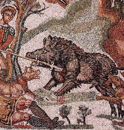

Roasted Wild Boar

What other way to celebrate a good hunt with roasted Wild Boar. Become the envy of any roman with this wild boar
recipe! Pair with wine only fit for that of the emperor!
"Boar is cooked like this: sponge it clean and sprinkle with salt and roast cumin. Leave to stand. The following day,
roast it in the oven. When it is done, scatter with ground pepper and pour on the juice of the boar, honey, liquamen,
caroenum, and passum." (Apicius, 330)
Ingredients
- 1 freshly killed boar
- 500ml wine
- 2 Tbsp honey
- 100ml sweep dessert wine
- salt
Directions
- For this you would need a very large oven, or a very small boar, but the recipe is equally successful with the boar
jointed. Remove the bristles and skin, then scatter over it plenty of sea salt, crushed pepper and coarsely ground
roasted cumin. Leave it in the refrigerator for 2-3 days, turning it occasionally.
- Wild boar can be dry, so wrap it in slices of bacon before you roast it. At the very least wrap it in pork caul.
Then put it into the oven at its highest setting and allow it to brown for 10 minutes. Reduce the oven temperature to
350°F, and continue to roast for 2 hours per kg, basting regularly.
- Meanwhile prepare the sauce. To make caroenum, reduce 500ml wine to 200ml. Add 2 tablespoons of honey,
100ml dessert wine, and salt or garum to taste. Take the meat out of the oven and leave it to rest while you
finish the sauce. Pour off the fat from the roasting tin, then deglaze it with the wine and the honey mixture.
Pour this into a saucepan, add the roasting juices, and fat to taste.
- Carve the boar into thin slices at the table, and serve the sweet sauce separately.
source